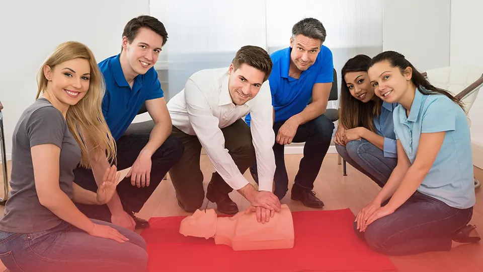

Välkommen till Nordic HLR!
Om oss ❤
Vi är dedikerade till att göra skillnad – en hjärtslag i taget. Vårt uppdrag är att utbilda och stärka individer, arbetsplatser och organisationer i hjärt- och lungräddning (HLR) och första hjälpen. Genom våra kurser får du de kunskaper och den trygghet du behöver för att kunna agera snabbt och effektivt i en nödsituation.
Vi erbjuder både grundläggande och avancerade kurser inom hjärt- och lungräddning samt första hjälpen. Våra kurser är till för alla – från privatpersoner till företag och skolor. Oavsett tidigare kunskapsnivå anpassar vi våra utbildningar för att säkerställa att alla deltagare känner sig bekväma och förberedda på att agera i en nödsituation.
